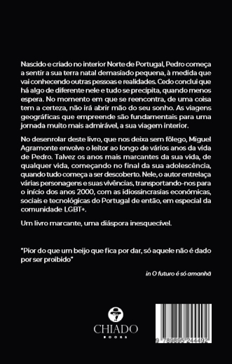

LIVRO
O Futuro é só amanhã
Sinopse
Nascido e criado no interior Norte de Portugal, Pedro começa a sentir a sua terra natal demasiado pequena, à medida que vai conhecendo outras pessoas e realidades. Cedo conclui que há algo de diferente nele e tudo se precipita, quando menos espera. No momento em que se reencontra, de uma coisa tem a certeza, não irá abrir mão do seu sonho. As viagens geográficas que empreende são fundamentais para uma jornada muito mais admirável, a sua viagem interior.
No desenrolar deste livro, que nos deixa sem fôlego, Miguel Agramonte envolve o leitor ao longo de vários anos da vida de Pedro. Talvez os anos mais marcantes da sua vida, de qualquer vida, começando no final da sua adolescência, quando tudo começa a ser descoberto. Nele, o autor entrelaça várias personagens e suas vivências, transportando-nos para o início dos anos 2000, com as idiossincrasias económicas, sociais e tecnológicas do Portugal de então, em especial da comunidade LGBT+.
Um livro marcante, uma diáspora inesquecível.
Prefácio
Os mais de vinte anos de PortugalGay.pt exibiram-me muitas histórias, de amores mal vividos, de relações entre pais e filhos alojadas numa educação baseada na castração dos sentimentos e da felicidade de uns para benefício da imagem que outros querem ver projetada em nós. Mas, ao longo deles também senti o amor que é agarrado por unhas e dentes e pelo qual se luta sob todas as formas. O amor de uma esposa que quer que o seu marido seja feliz, concretizando o seu apelo sexual por outro homem, e o possa fazer mantendo a família que lhes providencia estabilidade social, por exemplo. Recordo-me das inúmeras vezes que o PortugalGay.pt foi contactado com dúvidas, histórias de vida e gritos de socorro.
Este romance fala-nos de um Portugal que viveu lá atrás, o de um país pequeno, percorrido por camionetas e não por comboios Alfa de hoje ou Foguetes de outrora. Pequeno, porque geograficamente o é mas, também, por causa das mentalidades que empurraram tantas vidas para lá de tantas fronteiras, em busca de outras geografias ou, mais do que isso, de novas estruturas sociais. Nalguns aspectos estamos a anos-luz de outros tempos, mas noutros não tão longe do que fomos.
Alguns de nós nascemos em meios pequenos, como pequenas são aí as possibilidades de crescermos, de sonharmos, talvez. Pedro, o herói deste livro, o meu herói, é um de nós. Ele, eu, nós, faríamos facilmente parte desta história, embora a viver num tempo bem diferente dos dias retratados na obra. Contudo, independentemente do tempo, é a nossa personalidade que frequentemente deita por terra a preocupação construtiva dos outros sobre nós mesmos.
A vida não é uma linha recta, sendo antes um conjunto de traços que se estendem, torcem e contorcem, deixando-nos tantas vezes à deriva num mar imenso. Depois, no meio desse turbilhão, ainda andamos à procura de nos conhecermos. Nalguns casos, somos levados a mundos paralelos, onde desenvolvemos personalidades várias, avatares de nós que se exibem segundo as pessoas e os ambientes onde respiramos, personagens que se ajustam a cada mundo. Vamos vivendo nessa enxurrada, sugando cada momento como único, como sendo o último.
Ler Agramonte, que também é Miguel, faz-nos rir, chorar, ficar confortáveis para, logo a seguir, perdemos todo esse conforto. Porque sou Pedro mas, se calhar algures, fui Bruno ou Alex, ou não fui nenhuma destas personagens, apesar de as conhecer, de se terem cruzado comigo, de ter cruzado a minha vida com a delas
“O futuro é só amanhã” é uma história envolvente que, indiferentemente de quem a lê ou do seu percurso de vida, permite encontrar pontos comuns a todos nós, identificarmo-nos com este ou aquele capítulo, com este ou aquele momento, vivido pelo nosso herói.
A leitura fluente é promovida por uma redação criativa e cheia de pormenores, que nos transportam para junto de águas correntes, para uma sala de jantar entre amigos, para mais uma discussão familiar em casa ou, ainda, para a melancolia de uma viagem de camioneta pelo meio da serra.
É a descrição da vida de um jovem de província, um jovem homossexual que nasceu e um dia se encontrou no fim do mundo, uma vida vivida por tantos LGBT+ de ontem, tal como alguns de hoje. É uma experiência que tanto resulta em gargalhadas, como em sentimentos de angústia e ansiedade.
O futuro é só amanhã, mas hoje não se pode perder esta fascinante leitura de uma vida que bem poderia ser a sua.

DISPONÍVEL PARA COMPRA
Onde comprar
Podes encontrar ‘O Futuro é só amanhã’ na loja online. O autor poderá ter exemplares disponíveis. Para pedir um exemplar, clique aqui.
Comprar o livro →